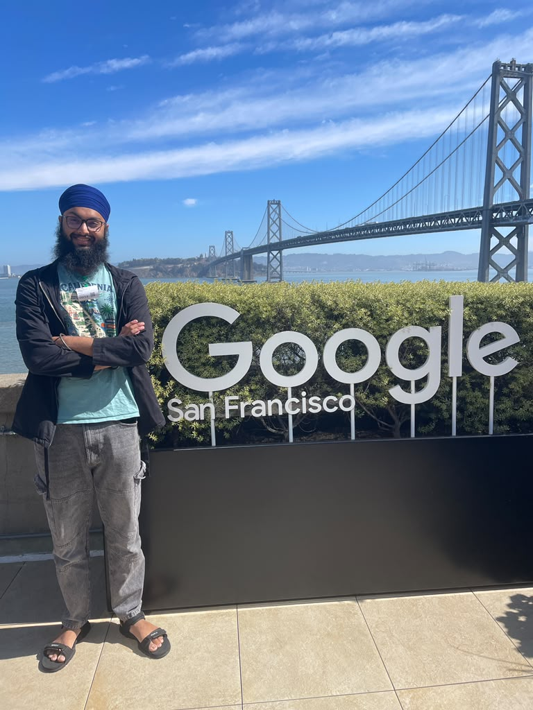

I recently had the opportunity to visit Google’s San Francisco campus with Amit Chahal. The view of the Bay Bridge was beautiful, and seeing the whole building made it easy to understand why the space leaves such a strong impression.
The campus is designed with room to work, recharge, and spend time with colleagues. There was excellent food, mini kitchens, massage chairs, and a game room with arcade games, a pool table, foosball, pinball, and a car-racing game. There was even a movie room with a PlayStation 5.

As impressive as the building was, the most valuable part of the visit was the conversation. Amit shared practical insights on preparing a CV, approaching interviews, and presenting our experience clearly.
His advice changed the way I think about interviews: try to enjoy the conversation instead of treating it as a test to fear. Interviewers are often learning how we approach a problem—how we clarify it, reason through it, and respond when we do not immediately know the answer—not simply measuring how many facts we can recall.
An interview is an opportunity to make your thinking visible.
That perspective makes preparation more meaningful. Knowledge still matters, but so do curiosity, communication, composure, and the ability to work through uncertainty.
Thank you, Amit, for showing us around and for sharing your time and advice so generously. You are an awesome person, and this was a visit I will remember.